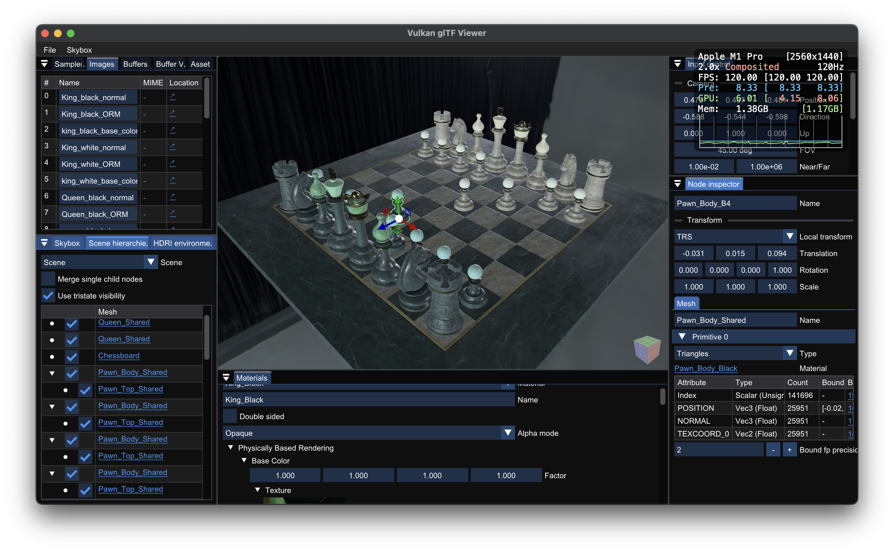
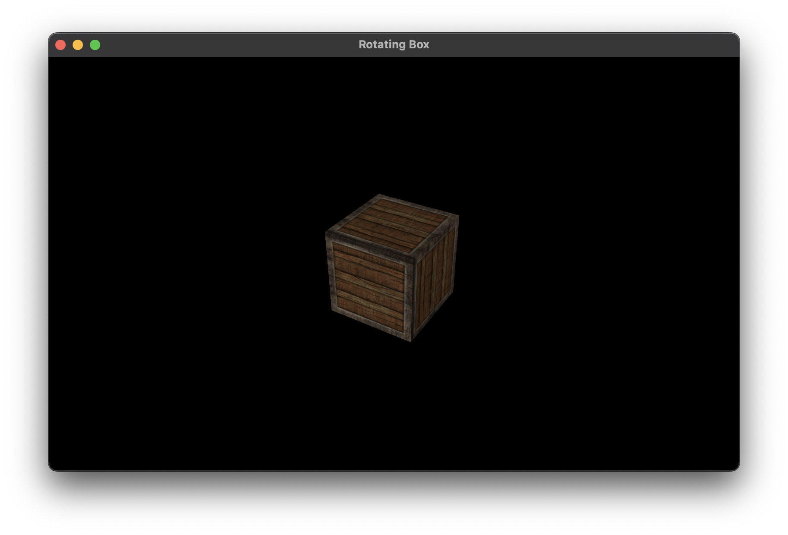

A set of Vulkan utilities based on RAII idiom and Modern C++ features.
Features
- Based on C++20 module and C++23 standard library module: just single line
import vku;will cover all. Module support is mandatory! (No header file provided.) - Can be easily integrated to your existing project by vcpkg.
- RAII handle for buffer and image with Vulkan Memory Allocator (VMA), with rich set of information.
- Bootstrapping for physical device, device and VMA allocator generation with fully customizable configurations and compile time safety.
- Automatic physical device selection based on queue family and extension requirements.
- Show accepted/rejected physical devices with your requirements.
- Templated descriptor set layout, compile-time descriptor write type inferring and pool size estimation.
- Managing multiple attachment image and views with MSAA and
VK_KHR_dynamic_renderingsupport. - Combining runtime shader compilation, shader loading and pipeline creation to single function.
- Executing hierarchical commands across the multiple queues with most efficient way using
VK_KHR_timeline_semaphore, by runtime dependency graph solver. - Forwarding your Vulkan code logics by "inlining" the structure initialization.
- Useful utility functions including debugging support.
- And more...
Projects that uses vku
I wrote several Vulkan projects using vku.
| Project | Description |
|---|---|
|  Vulkan glTF Viewer | Blazingly fast Vulkan glTF viewer. Fully bindless, GPU driven, async compute/transfer support.Detailed features
|
 vk-deferred | Application that demonstrates the deferred rendering with 1500 lights. |
 vk-weighted-blended | Rendering 25 opaque and 100 translucent objects using Weighted Blended OIT. |
Getting Started
Build Steps
vku can be used with CMake find_package, FetchContent, CPM.cmake or vcpkg (using overlay ports). See Using vku page for the details.
- Note
- vku can only be used with overlay ports when using vcpkg for now. I'm currently planning for make vku to be available with vcpkg official ports.
Tutorials
I wrote step-by-step tutorials of building some Vulkan applications using vku for best understanding. For each tutorial, it first shows how Vulkan-Hpp (with RAII binding) does, then which portion of the code can be simplified using vku. I really recommend you to read them.
| Tutorial | Description |
|---|---|
|  Hello Triangle | It demonstrates the most simplest Vulkan application with graphics operation, rendering a colored triangle onto image, and additionally persist the image into the file. You'll learn:
|
| Hello Triangle Window (In Progress) | It renders the triangle in a resizable GLFW window. You'll learn:
|
| Rotating Box (In Progress) | It renders a textured rotating box with 4x MSAA. You'll learn:
|
Tests
It uses GitHub Runner to test the build availability with Clang (Linux) or MSVC (Windows). See workflow files for details.
Also, some parts of codes have [the test codes](test) to validate their intended behaviors. You can set VKU_ENABLE_TEST CMake variable as ON in configuration time to enable the test build.
License
This project is licensed under the MIT License - see the LICENSE file for details.
Generated by